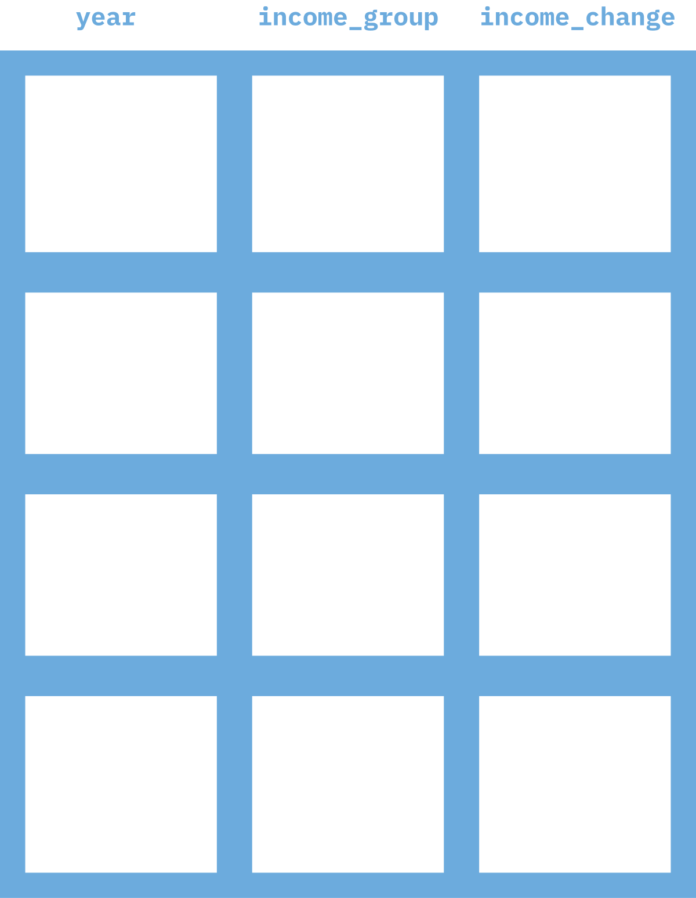
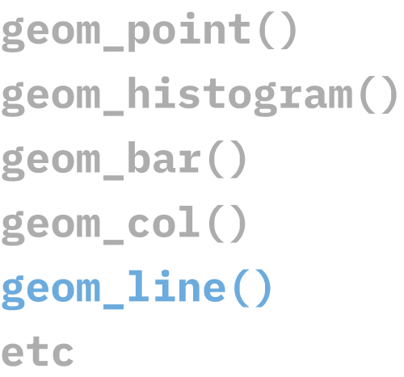

mean(data$satisfaction_rating[data$year==2019])R
RStudio
R Packages
Update R
Update RStudio
Update all packages
Create a new RStudio project
Download data from https://rfor.us/penguins
Copy the data into the RStudio project
Create a new R script file and add code to import your data (refer to Getting Started with R if necessary)
Save your R script file
Starts with function, data frame in parentheses
Uses dollar sign (data$satisfaction_rating) notation
Uses bracket ([data$year==2019]) notation
Repeats data frame name each time you call it
Nicely named functions because “the bottleneck in most data analysis is thinking time” - The tidy tools manifesto
“Data frame first, data frame once” - Alison Hill
Uses the pipe (|>) to chain together a series of functions
Every time you see a pipe, replace it with the word “then”
|>
Native pipe
%>%
Tidyverse pipe
Mac
Command + Shift + M
Windows
Control + Shift + M
Make sure you have R 4.1 or higher
Switch to using native pipe by default
Confirm that the keyboard shortcut works to insert a native pipe
select() to keep and drop columns
mutate() to create and change variables
filter() to keep and drop rows
summarize() to create summaries of our data
group_by() and summarize() to create grouped summaries
arrange() to reorder our data
select()select()Mac
Command + Enter
Windows
Control + Enter
mutate()mutate()mutate()filter()filter()| Operator | Description | Usage |
|---|---|---|
| < | less than | x < y |
| <= | less than or equal to | x <= y |
| > | greater than | x > y |
| >= | greater than or equal to | x >= y |
| == | exactly equal to | x == y |
| != | not equal to | x != y |
| %in% | group membership | x %in% y |
| is.na | is missing | is.na(x) |
| !is.na | is not missing | !is.na(x) |
| Operator | Description | Usage |
|---|---|---|
| & | and | x & y |
| | | or | x | y |
| ! | not | !x |
summarize()summarize()| Description | Function |
|---|---|
| number | n() |
| sum | sum(x) |
| minimum | min(x) |
| maximum | max(x) |
| mean | mean(x) |
| median | median(x) |
| standard deviation | sd(x) |
| variance | var(x) |
| rank | rank(x) |
group_by() and summarize()group_by() and summarize()arrange()arrange()

ggplot2Explain problem of having to redo work
Source vs Output
https://jthomasmock.github.io/quarto-in-two-hours/materials/01-intro-quarto.html#/change-your-mental-model
Create a new Quarto file, setting the title as “Penguin Report”, the author as your name, and the output format as Word.
Save your Quarto file as report.qmd.
Look through this Quarto file and make sure that you can identify the YAML, text sections, and code chunks.
Click the Render button and open the file that gets produced (report.docx).
Stands for “YAML Ain’t Markup Language” (don’t worry about it).
Often referred to as the “front matter.”
It is metadata that tells Quarto things like title, author, output format, etc.
Go into the YAML and change the title to “My Super Fancy Report.”
Change the output format to HTML by changing format: word to format: html.
Render again and open report.html to make sure your changes show up.
Markdown
Output
Text with some words in bold and some words in italics
| Markdown | Output |
|---|---|
|
Header 1 |
|
Header 2 |
|
Header 3 |
|
Header 4 |
|
Header 5 |
|
Header 6 |
Markdown
Output
Markdown
Output
Don’t add spaces before the start of lines
Do add space between lines
Working in your report.qmd file, delete the default content (everything below the YAML).
Add a first-level header that says “Introduction”
This report is about three species of penguins:
- Adelie
- Gentoo
- Chinstrap
You’ll learn so much about the penguins. I hope you’re ready!
Mac
Command + Option + I
Windows
Control + Alt + I
Run code like you would code in an R script file
Use buttons in RStudio
output: Do you want to display the output of the code chunk (e.g. the graph)?
echo: Do you want to display the code in the code chunk?
message: Do you want to display any messages R gives you?
warning: Do you want to display any warnings R gives you?
Run individual code chunks to make sure they work, but then render to make sure the whole document can render
The Quarto document needs to be able to run on its own (packages, data, etc)
Working in your report.qmd file, right below the YAML, add a code chunk that loads the tidyverse and imports your penguins data to an object called penguins
Right below the Results header you added previously, create a second code chunk and add some code that you used to make a graph in the data viz section of the course.
Render your document and make sure it works!